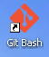
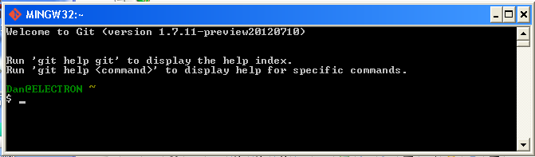

by Dan Peirce B.Sc.
Reformated from Dokuwiki
This page is newer than my Git page. That page is essentially notes that I took as I was having my first run through a basic Git tutorial and the first weeks of using it. Now that I have a better idea of what git is and how to use it I thought I would start a new page rather than try to reorganize the old one (which I may eventually delete).
It is very easy to find information on Git when a question arises simply using Google. I am finding http://git-scm.com/book an excellent resource. I have the free epub version of this book on my tablet so I can read it on the go.
If you are wondering what Git really is see http://git-scm.com/about.
This section is very basic. git is a good tool for collaborative projects but even in a small project on which someone works alone it git is beneficial. It allows one to keep a stable working copy of an entire project while working on new features. It facilitates experimentation because git makes it easy to have multiple versions of the same project. Files can be changed but if one feels changes have gone in the wrong direction it is easy to go back to an earlier version of the project. It is also possible to have multiple branches which can be merged with the master, discarded or kept for future development.
Git was developed on Linux and has been ported to MS Windows. The Windows port is beta. There is a Windows GUI for Git but it is not full featured and documentation is primarily available for the Bash command line interface (CLI). I have been sticking to the command line interface because the help and documentation is all for this interface. Also, if one moves over to a Linux computer (like say the Raspberry Pi) the one will need to know the CLI. There are not may commands needed for basic Git and one can use a cheat sheet (and/or Google) to help remember commands.
Since Git was written for GNU/Linux the commands expect to be in a GNU Bash shell. Git for Windows includes a Bash shell called MINGW32 (essentially mingw which provides a minimalist GNU shell functionality on a windows system).
Once Git is installed on a windows computer it is possible to open the Git Bash shell: 

This may look odd to many MS Windows users, but don't be put off: it is not difficult to use. If one were to use the standard cmd.exe shell on a MS Windows computer they would get a typical prompt something like:
C:\Documents and Settings\Dan>
This shows the current path (where one is in the directory (or folder) tree. On MS Windows systems each drive has a letter designation followed by a colon. The rest of the path shows the folders and sub-folders down to the current location in the tree.
Unix like shells don't have drive letter designations. Different drives are mapped into the directory system with mount points and there is just one directory tree. To the Bash shell a C: at the beginning of a path does not make any sense.
Another difference between MS Windows and Bash is that Bash uses forward slashes in the path rather than back slashes. See http://www.linfo.org/forward_slash.html
In the Bash shell there is a shortcut designation for an individual's "home" directory which is the directory a person finds him/herself in when first logged in. The home directory is designated by a Tilda "~".
Since GNU/Linux is based on Unix and Unix was developed for Mini Computers not Personal computers there is an assumption that everyone logs in remotely. Before the Path there is an indication of the account user name and computer name that one has logged into. Networking was common for Unix based computers long before it was common for MS PC's.
After the path there is a ">" prompt on the MS windows command line. On the Bash command line there is a "$" rather than a ">".
More detail at < In Unix, what is the shell? >
In the example screen shot of a MINGW32 window given up above one can see that the user name was Dan and the computer name was ELECTRON. One can see that the path is the user Dan's home directory but the actual absolute path is not explicit. The Bash command to get the working directory (print working directory) is pwd.
Dan@ELECTRON ~ $ pwd /c/Documents and Settings/Dan Dan@ELECTRON ~ $
Moving around the file system works essentially the same as with the MS Windows command console. The command is change directory using cd {destination path}. In Bash if one leaves off the destination path they will got back to their home directory.
Bash under MINGW32 can access USB Flash drives.
As far as I can tell if the the flash drive is added after the Git Bash window has been opened it make be necessary to close all Bash windows and open a new one after the USB drive is attached ( http://stackoverflow.com/questions/8612751/git-bash-can-not-identify-usb- flash-drives ).
Dan@ELECTRON ~ $ cd /e/project Dan@ELECTRON /e/project $
The list command can be used to see the contents of the project directory.
ls
Dan@ELECTRON /e/project $ ls Functions robot_diagnostic_4002
Dan@ELECTRON /e/project $
One can get more information if the -l switch is used.
Dan@ELECTRON /e/project $ ls -l total 0 drwxr-xr-x 1 Dan Administ 0 Oct 21 13:33 Functions drwxr-xr-x 1 Dan Administ 0 Oct 21 13:28 robot_diagnostic_4002 Dan@ELECTRON /e/project $
The d at the beginning of the line indicates that Functions is the name of a subdirectory in project. robot_diagnostic_4002 is also a subdirectory. One can find out what is in the Functions directory as follows:
Dan@ELECTRON /e/project $ ls -l Functions total 1 -rw-r--r-- 1 Dan Administ 0 Oct 21 13:33 osc.c -rw-r--r-- 1 Dan Administ 0 Oct 21 13:33 osc.h Dan@ELECTRON /e/project $
So far this has all been simple Bash commands. For more introduction to Bash see http://www.beforever.com/bashtut.htm#pwd. Google will bring up many other similar intro's (and/or more in depth information -- a lot of the information found would be a distraction to what we need at this point).
As stated already a Git cheat sheet can be used to help remember the Git commands.
Let us start with the assumption a person has a few local files they want to start tracking with Git.
launch git bash
navigate to folder containing files
git init command to initialize repository
git add * this adds all the files in the folder to the repository
git commit -m "first commit"
That is the very simplest set of commands required to set up a repository.
One thing a person might want to also do is specify their name and email address before doing the initial commit in case the repository is put on a remote repository at some point.
git config --global user.name "Your Name"
git config --global user.email you@example.com
Often it is desirable to ignore some file types so that they will be left out of the repository. A simple .gitignor file that I have used for MPlab C18 projects contains the following:
*.cof *.o *.hex *.map *.mcs *.err *.mcw
This ensures only the source files, .gitignor file and project file will be included in the project. One does not want any of these other file types tracked in the repository.
Git works best with text files.
It is easy to regenerate those other files from the source files using MPlab.
Saving those files in the repository would waste space, waste time and complicate the process of merging branches.
Having the project file in the repository is a good idea because it is a text file and it contains a list of files that should be included in the project. The list may change and grow as the project changes and grows which means tracking this file is very helpful.
Often one does not start from scratch but pulls in work from others. This document should help one get started.
That file is one of many that will be installed on a Debian Linux system if one installs the git-doc package. On my system everyday.html is in the /usr/share/doc/git-doc directory along with many other documentation files.
If one just wants to clone a repository from a place like bitbucket it is very simple.
navigate to a new folder where you want the project to go
from git bash type the following (as an example)...
git clone https://bitbucket.org/danpeirce/apsc1299labs.git
This will set up a local repository with the complete apsc1299labs project. This would be useful for APSC1299 students. At this point everything could be done locally unless there is a change on the server that students would then want to fetch or pull.
For more information on the apsc1299labs project see
work in progress...